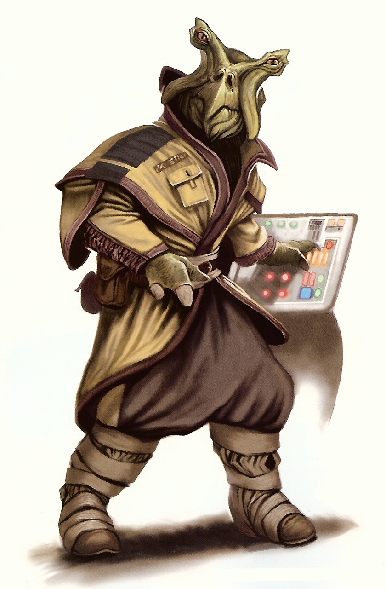

Ishi Tib
Special Abilities: Ishi Tib begin the game with one rank in Discipline. They still may not train Discipline above rank 2 during character creation.
Amphibious: Ishi Tib can breathe underwater without penalty and never suffer movement penalties for traveling through water.
Water Dependence: If an Ishi Tib has not been doused in salt water in the last twenty-four hours, the character’s wound threshold is reduced by 2. This condition remains in effect until the Ishi Tib is doused in salt water.
Hailing from the planet of Tibrin in the Mid Rim, the Ishi Tib are an amphibious species that evolved from large, bony fish native to the reefs of their homeworld. They are keenly aware of their world’s natural balance, and have striven for millennia to ensure its ecology is not unduly affected by their presence. They are a pensive species and rarely act impulsively, making them excellent planners and strategists. They are also dedicated to the tasks they pursue, finding it difficult to abandon an assignment once they set their minds to accomplishing it. A number of Ishi Tib have joined the Rebel Alliance, where they are greatly valued as tacticians and planners.
Ishi Tib are amphibious humanoids who possess leathery green skin and two eyestalks that extend from their heads at a somewhat jaunty angle. Their eyes are typically yellow with slitted pupils, though colors such as orange and yellow-green have also been observed. Ishi Tib faces also feature two pouch-like cheeks, which are used to store food such as algae, microscopic organisms, and small crustaceans. In the center of the face is a powerful beaklike mouth. While Ishi Tib commonly use their beaks to crack open crustacean exoskeletons or shellfish shells, their mouthparts can also provide an improvised weapon in dire circumstances.
The bodies of Ishi Tib are bulky and muscular. Their thick limbs end in two-fingered hands and fin-like feet that allow them to swim unimpeded through the water. Though their thick skin is resistant to water evaporation, the Ishi Tib are forever tied to the seas of their homeworld. To prevent their bodies from drying out, Ishi Tib must regularly immerse themselves in a saline liquid similar to that of Tibrin’s oceans. Failure to see to this basic need can result in disability and death, often within a matter of days.
Ishi Tib reproduce by laying eggs. Once fertilized, the eggs are tended to in communal hatcheries dug into sandbars near the coral reefs where the Ishi Tib build their settlements. Reproduction is rarely done out of personal desire. Eggs are fertilized only as their communities require. After six years of maturation, Ishi Tib children are developed enough to emerge from the water. Due to the communal nature of child rearing, Ishi Tib never know who their parents or children are.
ishi Tib society is based on communities called “schools,” which can consist of up to 10,000 individuals. Each school is governed by a representative who is elected to a one-year term of office. Representatives rule based on ecological law—a series of strictures that look to nature and the environment .above all other things, for guidance. Ecological law dictates that the needs of the environment take precedence over the needs of groups or individuals.
Due to this unique outlook, Ishi Tib are suspicious of new technologies. Each new device, technology, or scientific process introduced to their planet is rigorously reviewed according to ecological law, with the potential impact to the environment analyzed from countless angles. Without approval, such advances are immediately outlawed. Even those that are approved are subject to intense regulation until such time as their benefit is proven beyond a reasonable doubt. It is for this reason that many offworld corporations avoid business with the Ishi Tib on their homeworld.
Emigration from Tibrin is a rarity, and most Ishi Tib are content to live out their lives on their homeworld. Those Ishi Tib who do choose to leave their planet are often tempted by job offers in the greater galaxy, for members of their species are in great demand by other governments and corporations. Due to their innate ability to oversee complex projects, Ishi Tib are most often desired as tacticians, executives, project managers, planners, and accountants. Unfortunately, many such Ishi Tib have been victimized by unscrupulous corporations and then found themselves cut adrift in a vast and unfamiliar galaxy.
Ishi Tib do not marry, and mating is conducted only in times of low population or some other pressing need. This, of course, is not to say that they do not seek out social interaction with others. Although they prefer relationships with other Ishi Tib, in the absence of their own kind, they focus these feelings on their associates.
Tibrin is a tropical world covered in shallow seas, expansive reefs, and atolls that extend above the surface of the water. The Ishi Tib strive to maintain the natural harmony of their world, and their environmental efforts have proven to be incredibly fruitful. Due to their dedication, Tibrin remains a pristine planet, unsullied by the byproducts of high technology or industrial avarice. Even the seas of Tibrin are safe, as the Ishi Tib have taken great pains through the centuries to either domesticate the native wildlife or eliminate dangerous apex predators altogether.
Ishi Tib cities, including the capital of Tibrina, are built upon—or grown out of—the planet’s coral reefs. Their architecture is heavily influenced by nature, and it is often impossible for visitors to tell where the reefs end and the buildings begin. Rather than competing with nature, Ishi Tib structures are designed to complement the natural order. As such, Ishi Tib cities and towns are unaffected by neither storms nor tidal forces.
Much of the Ishi Tib’s industry revolves around agriculture and food production in the seas surrounding their settlements. Countless varieties of edible seaweed are sown, tended, and harvested throughout the planetary year, and underwater corrals are stocked with fish and crustaceans, which make up the majority of the Ishi Tib diet. Hunger is unheard of on Tibrin, and excess stocks of food are exported to other worlds.
Tibranese, the Ishi Tib language, is a tongue comprising squeals, honks, and clicks. Though considered discordant by offworlders, the language serves the Ishi Tib well. The written form of Tibranese consists of thousands of hieroglyphs, which, during the Ishi Tib’s cultural development, were originally written by painstakingly inscribing them into soft objects. Spoken Tibranese is difficult for offworlders to master, largely due to the fact that many subtle linguistic cues can only be made with an Ishi Tib’s beak.
The Ishi Tib predilection for meticulous planning, patience, and insight has made them a welcome addition to the ranks of the Rebel Alliance. Ishi Tib Commanders are well respected for their grasp of tactics, calculating nature, and ability to analyze nearly every possible outcome.
Though they are typically calm and unflappable, Ishi Tib have developed a reputation for snapping violently under harsh conditions. When cornered or pushed to extremes, either by enemies or unfortunate circumstances, they possess a tendency to lose control. During such episodes, Ishi Tib enter a violent rage, and their baser instincts take control of their actions. In many instances, they seek to kill and devour the target or targets of their anger, using their powerful beaks to tear their enemies apart.
Ishi Tib are not proud of their species’ tendency toward extreme violence when pushed past their emotional limits. They rarely speak of such incidents and generally are ashamed to reveal that they have the potential for mindless brutality if driven too far. Most Ishi Tib admit that they can succumb to rage under the right circumstances, despite their best attempts to resist their more animalistic urges. A few Ishi Tib, however, embrace their rage and harness it to further their own ends.